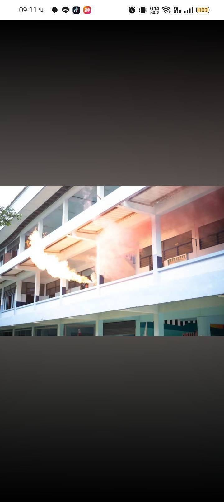
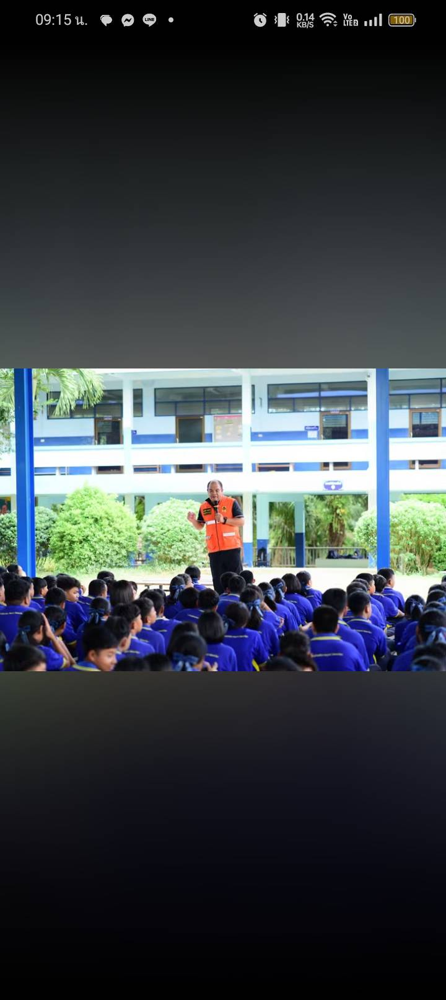

เกียรติบัตร
ความสามารถทางด้านวิชาการ ระดับมัธยมศึกษาตอนต้น
มอบโดยโรงเรียนเทศบาลนครปากเกร็ด ลงนามโดยครูวัน ชินโสภา รองผู้อำนวยการโรงเรียน
แฟ้มสะสมผลงาน นสพ. ปรเมศวร์ สมบูรณ์
โรงเรียนทุ่งใหญ่เฉลิมราชอนุสรณ์ รัชมังคลาภิเษก


ได้รับเกียรติบัตรด้านความสามารถทางวิชาการระดับมัธยมศึกษาตอนต้นจากโรงเรียนเทศบาลนครปากเกร็ดเมื่อปี 2564 และเข้าร่วมกิจกรรมด้านความปลอดภัยของโรงเรียน ทั้งการฝึกซ้อมอพยพหนีไฟและการอบรมความปลอดภัย
มอบโดยโรงเรียนเทศบาลนครปากเกร็ด ลงนามโดยครูวัน ชินโสภา รองผู้อำนวยการโรงเรียน
การจำลองเหตุเพลิงไหม้ที่ระเบียงอาคารเรียน เพื่อฝึกการอพยพและการรับมือเหตุฉุกเฉินภายในโรงเรียน
การบรรยายจากเจ้าหน้าที่ต่อหน้านักเรียนทั้งระดับชั้นที่ลานโรงเรียน ว่าด้วยการป้องกันและรับมือภัยในโรงเรียน